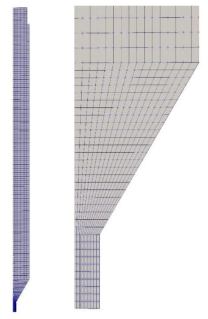
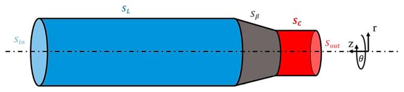

Virtual and Physical Prototyping Viscoelastic simulation and optimisation of the polymer flow through the hot-end during filament- based material extrusion additive manufacturing
2022
Abstract
This paper presents a novel Computational Fluid Dynamics (CFD) model that simulates the nonisothermal flow of a viscoelastic fluid through the hot-end in filament-based Material Extrusion Additive Manufacturing (MEX). The hot-end is an essential part of the printhead, as it melts and extrudes the polymeric material. Thus, robust modelling tools are necessary for optimising its operation. In this study, a viscoelastic CFD model is used to predict the filament feeding force and the results are validated against the experimental measurements at different filament feeding rates, liquefier temperatures, nozzle diameters and liquefier lengths. It is found that the viscoelastic model is more accurate than the commonly used Generalised Newtonian Fluid approximation and it captures the influence of process conditions on the feeding force. Finally, the model is used to optimise the hot-end channel. Among others, it is shown that the feeding force can be minimised by selecting an optimal liquefier diameter.
Figures from this paper
{kind=link}

{kind=link}

Citation
@article{16_2022_serdeczny_journal_viscoelastic_simula,
title = {Virtual and Physical Prototyping Viscoelastic simulation and optimisation of the polymer flow through the hot-end during filament- based material extrusion additive manufacturing},
year = {2022},
doi = {10.1080/17452759.2022.2028522},
url = {https://doi.org/10.1080/17452759.2022.2028522}
}